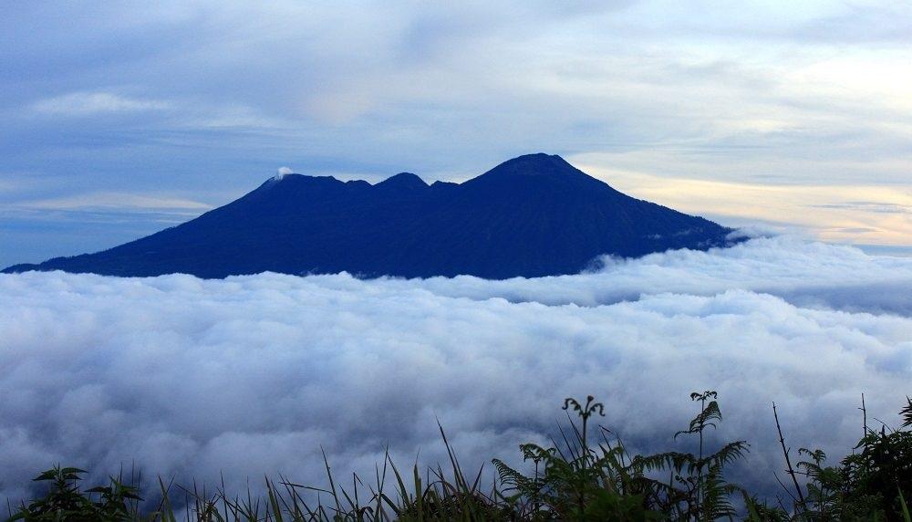

Gunung yang berada di sebelah barat laut Kota Malang ini memiliki tinggi 3339 mdpl. Biasanya sering digunakan oleh para Pecinta Alam untuk melakukan Pendidikan Dasar. Baca Selengkapnya ...

Gunung Bromo mungkin bukan tujuan utama untuk para pendaki gunung, tapi tak ada salahnya mengunjungi salah satu icon pariwisata dari Malang ini, bahkan Indonesia! Sudah bukan rahasia lagi kalau Bromo memiliki keindahan alam luar biasa. Selain wisatawan lokal, tidak sedikit turis mancanegara yang datang ke Indonesia untuk melihat kecantikan Gunung Bromo. Baca Selengkapnya ...

Gunung yang satu ini mungkin tidak banyak yang tahu. Tapi bagi warga Malang, Gunung Panderman merupakan tempat pelarian sejenak dari kesibukan sehari-hari untuk sekedar menyegarkan pikiran. Panderman masih termasuk dari komplek Pegunungan Kawi, puncaknya memiliki ketinggian 2000 mdpl. Baca Selengkapnya ...

Nama gunung ini sudah tidak asing lagi di telinga para pendaki, banyak dari mereka memiliki impian untuk mendaki Gunung Semeru.Ranu Kumbolo yang disebut-sebut sebagai surganya Gunung Semeru membuat siapapun tergoda untuk datang kesana. Terlebih Semeru dengan puncaknya yaitu Mahameru (3676 mdpl) mendapat predikat sebagai gunung tertinggi di tanah Jawa. Baca Selengkapnya ...

Gunung Welirang masih satu komplek dengan Gunung Arjuna, sebab itu tak sedikit pendaki yang langsung mendaki kedua gunung itu dalam satu kesempatan. Berbeda dengan Gunung Arjuna yang sudah tidak aktif, gunung yang memiliki ketinggian 3156 mdpl ini merupakan gunung yang masih aktif dan selalu memuntahkan asap juga cairan belerang. Baca Selengkapnya ...
- HALAMAN
- 1.